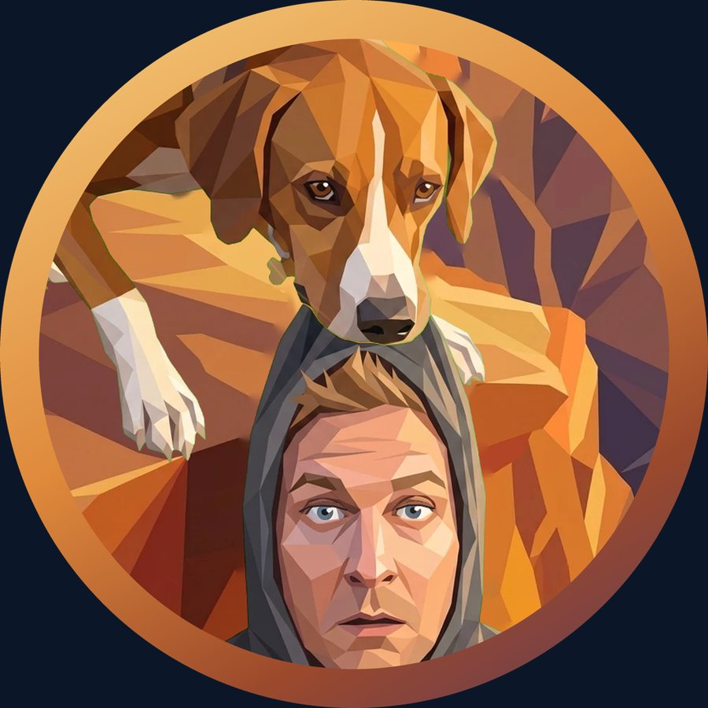
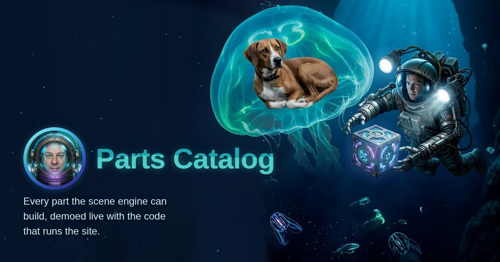

It started with a missing link preview. My site didn't have a picture to show when someone shared it, so I went looking for one and found an old illustration of Marley and me at the edge of a canyon, her teeth in my hood, me hanging over the drop.
I wanted it to move, so I rebuilt it in layers: generate the pieces with AI image tools, then cut, place and animate every one by hand in code. My first try had Marley lying down, and it looked like she was chewing on me. She needed to be standing. She's saving me.

That logo made the Parts Catalog look bare, so it got a deep sea: Marley asleep in a glowing jellyfish, me as a diver holding out a cube of parts, plankton, an anglerfish with a flickering lure and, now and then, a giant paper squid passing through the dark.

Then the Workshop got a bench at night. The first version had me holding a soldering iron right over the sleeping dog. That had to go. Now I shape a hologram with my hands, a few of the site's paper animals stand on glowing discs, and Marley sleeps at the end of the bench with a little line of z's so nobody worries.
What I learned: subtle means a few percent of movement over several seconds, the pose carries the story, and a sleeping dog needs to visibly breathe.